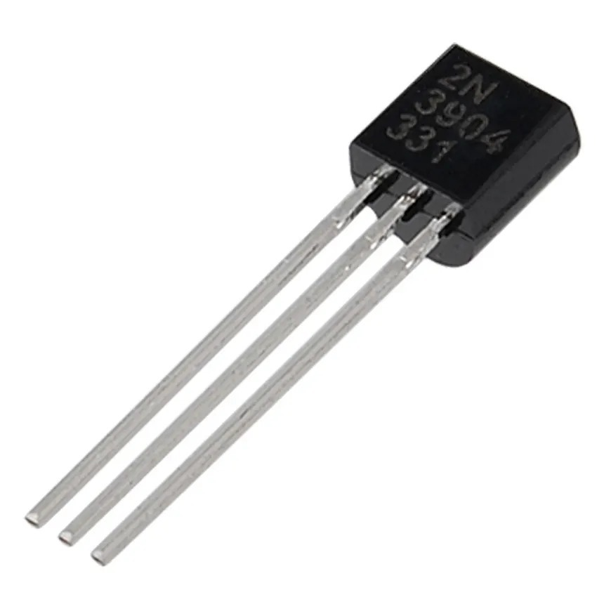
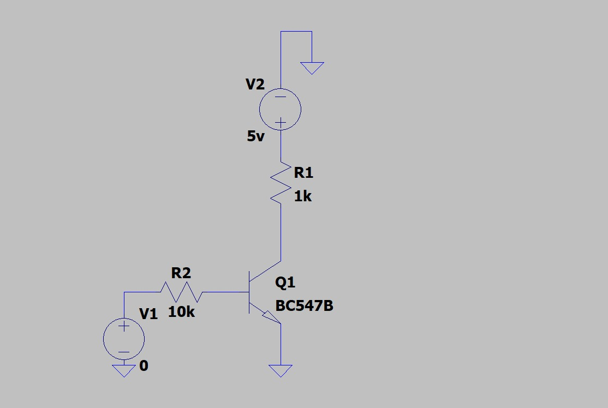
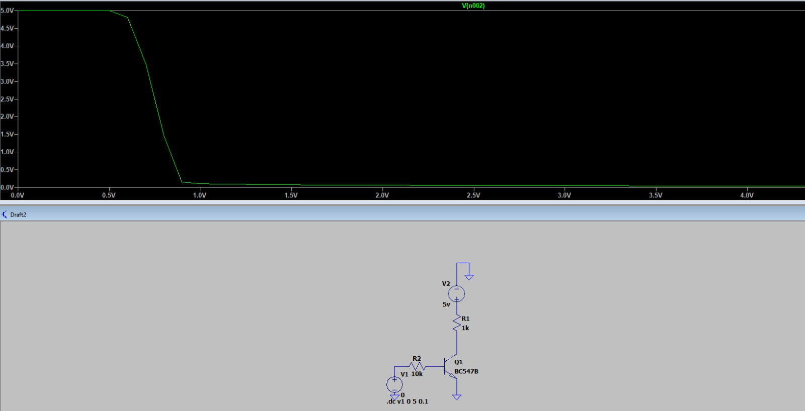
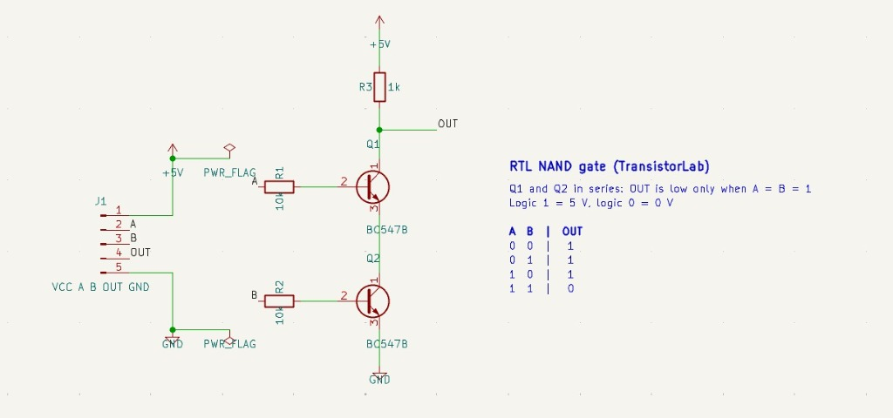
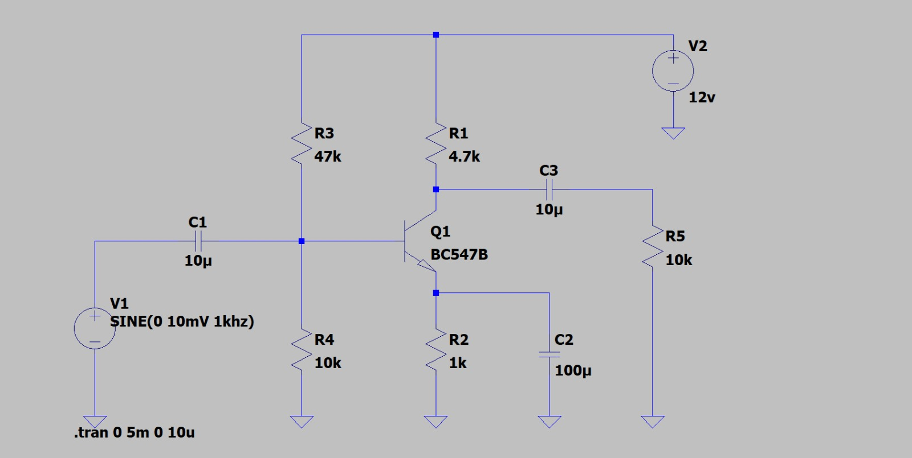
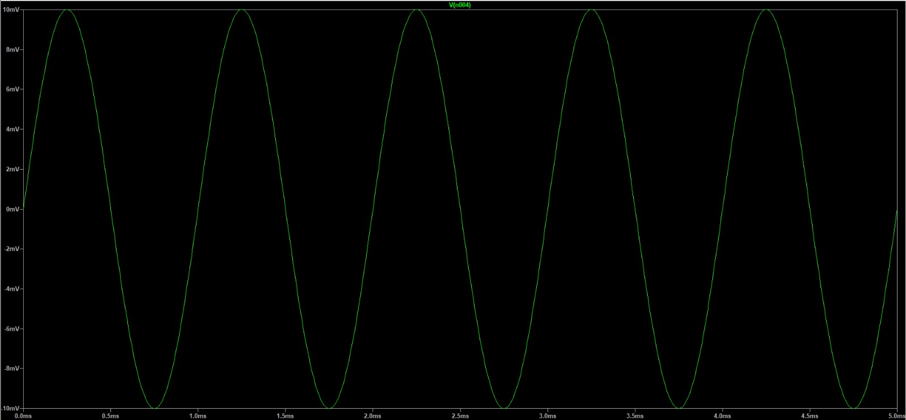

TransistorLab: From Silicon to Intelligence
"Transistors switch, gates compute, adders do arithmetic; the same transistor amplifies and can mimic a neuron"
Computing hardware arises from solid-state semiconductor physics. By modulating base-emitter carrier injection in a single bipolar junction transistor (BJT), we construct elementary logic gates that cascade into multi-bit binary adders. Biased in its active region, that identical physical junction operates as a small-signal analog amplifier or emulates leaky integrate-and-fire neuro-electrodynamics.

🔍 Zoom ComponentDigital: Switching to Arithmetic
Transistors function as electronically controlled switches. Modulating base-emitter voltage transitions a discrete BJT between high-impedance cutoff and low-impedance saturation, forming the substrate for Boolean logic gates and cascaded ripple adders.
1.1 BJT Switch & DC Transfer Characteristic
Varying base input voltage Vin drives the BC547B through three distinct physical regimes: cutoff (Vin ≤ 0.70 V), active linear conduction, and saturation (Vin ≥ 1.18 V) where VCE clamps near 0.20 V.
LTspice Bench Verification

🔍 Zoom Schematic
🔍 Zoom Simulation1.2 Logic Gates: Resistor-Transistor Logic (RTL)
Discrete BJTs combine to form primitive logic gates: a single transistor pulls the output low when driven (NOT), two series transistors require both bases active to complete the ground path (NAND), and two parallel transistors pull low if either conducts (NOR).
KiCad Schematic Verification

🔍 Zoom Schematic1.3 Cascaded 4-Bit Ripple Carry Adder
Chaining four 1-bit full adders synthesized purely from 36 NAND gates (72 transistors total) performs multi-bit addition. The carry bit ripples sequentially from Stage 0 (LSB) to Stage 3 (MSB).
Analog: Common-Emitter Amplifier
Operating in the linear active region, small-signal base oscillations modulate large collector currents. The resulting output voltage swing is inverted by 180° and clips non-linearly if driven beyond supply boundaries.
Small-Signal Voltage Gain & Supply Rail Clipping
Voltage gain Av = −gm · (RC ∥ RL). Observe the dual-channel oscilloscope display below: input sinusoidal oscillations in mV on Channel 1 (Amber), and inverted multi-volt swings on Channel 2 (Cyan) clamped against supply rails VCC and VCE,sat.
LTspice Bench Verification

🔍 Zoom Schematic
🔍 Zoom Waveform 🔍 Zoom Waveform
🔍 Zoom Waveform
Neural: Artificial vs. Spiking Neurons
Artificial neural networks evaluate deterministic algebraic transformations through static activation functions, whereas biological neurons integrate temporal charge across a leaky RC lipid bilayer and emit discrete action potentials.
3.1 Artificial Perceptron: Dot Product & Activation Curve
Computes an affine transformation z = wTx + b and projects through an activation function (Sigmoid, Step, or ReLU). Adjust inputs and weights with sliders to observe the real-time operating point on the activation response curve.
3.2 Biophysical Leaky Integrate-and-Fire Dynamics
An equivalent RC circuit (C = 1 μF, R = 100 kΩ, τ = 100 ms) integrates input stimulation current. When membrane potential reaches threshold Vth, an action potential spike is emitted and potential resets to zero.
Validation Matrix: Theory vs. Models
Direct quantitative comparison between idealized mathematical formulations, JavaScript client-side simulation models, and SPICE physics-based simulation benchmarks.
| Benchmark Test | Analytical / Theory | JavaScript Model | LTspice Simulation | Status |
|---|---|---|---|---|
| BJT Turn-on Threshold | VBE = 0.70 V | 0.70 V | ≈ 0.5–0.6 V | Differs (explained) |
| BJT Saturation Threshold | Vin ≈ 1.18 V (VCE = 0.20 V) | 1.18 V | ≈ 0.9 V | Differs (explained) |
| CE Bypassed Gain | |Av| = gm · (RC ∥ RL) = 159.1 | 159.1 | ≈ 154 | Within 3% |
| 4-Bit Adder (36 NAND) | Truth table addition (256/256 vectors) | 256/256 exact match | n/a | Match |
| LIF Constant Firing Period | 69.31 ms formula (T = RC · ln[IR / (IR − Vth)]) | 69.30 ms sim | n/a | Match |
The simple model assumes β = 100 and a sharp 0.7 V turn-on; the BC547B in LTspice has a higher β and turns on gradually.